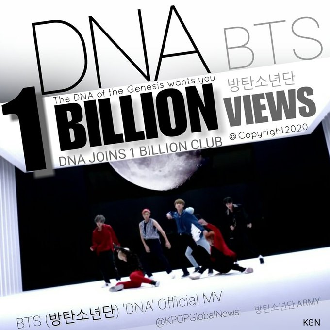

MUSIC
How they all started !
This video still makes any ARMY cry ❤
This was their first official video ->No More Dream
| Recently DNA music video made BTS the first ever Korean boy band to reach 1 billion views on YouTube.

| To listen to their top hit single "DNA"Click Here !
| To listen to their top hit single "Fake Love"Click Here !
| To listen to their top hit single "Mic Drop Remix"Click Here !
| To listen to their top hit single "Idol"Click Here !
| To listen to their top hit single "Waste it on me"Click Here !
| To listen to their top hit single "Fire"Click Here !
| To listen to their top hit single "Spring day"Click Here !